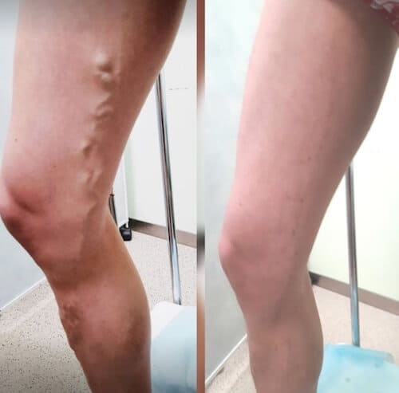
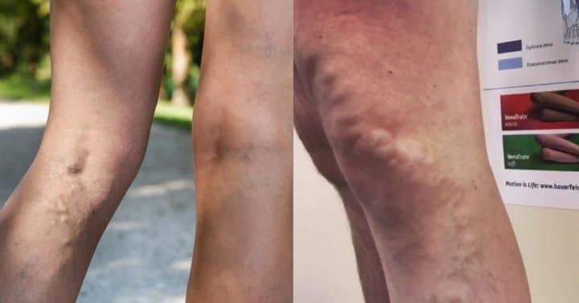
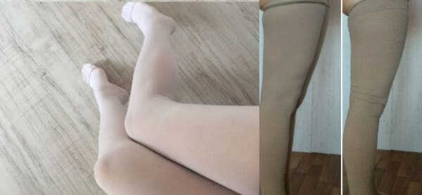
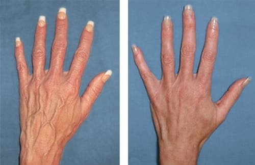
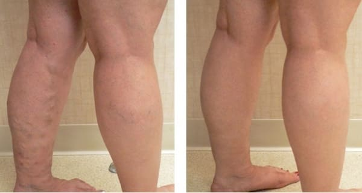

COME HO CURATO LA VARICOSE IN 4 SETTIMANE
Aggiornato Visitatori: 2,5 mila
Ciao a tutti! Lasciate che vi sveli un segreto: nell`ultimo mese ho restituito la salute e la bellezza alle mie gambe! Voglio condividere con voi la mia grande vittoria ... Sono riuscita a curare le vene varicose! Condivido il mio metodo con voi. Sarà molto bello se lasciate recensioni sotto questo articolo, se questo strumento vi è familiare! Sei d`accordo?

Sono diventata madre due anni fa. Dopo il parto, ho avuto delle terribili vene gonfie sulle mie gambe. Ricordo come poi mia madre sospirò: `Hai solo 33 anni e hai già le vene varicose. Io ho già 54 anni e le mie vene sulle gambe sono a posto)` Sì, mia madre chiaramente non lo è distinta dalla delicatezza. Cosa devo fare se la sua genetica è migliore, o forse stata solo fortunata. Pero la natura non mi ha risparmiato (( la gravidanza ha provocato le vene varicose.)
Le vene varicose non sono solo brutte, ma anche molto dolorose. Le mie gambe sono diventate pesanti e gonfie Non riuscivo a stare in piedi per molto tempo - volevo sedermi o sdraiarmi per toglierli di dosso, sgranchirmi un po `i piedi, rilassarmi ... Quindi i miei genitori e la nonna dovevano spesso fare le passeggiate con la mia figlia a posto mio. Le gambe doloranti mi hanno esaurito, quindi ho seguito il consiglio del medico e lo fatto l`intervento. Andato tutto bene, sono stata sollevata, l`unica cosa è stata che i lividi hanno impiegato molto tempo per dissolversi. Dopo un paio di mesi, ho deciso che stavo bene e sono andata in palestra. Non ho sentito alcun dolore o fastidio, ma meno di sei mesi dopo, la malattia è tornata di nuovo!

Ricordo di aver fatto gli squat. Ho piegato le ginocchia, poi mi sono alzata (non bruscamente) ... i miei occhi si sono incupiti, mi girava la testa e avevo acufene. Ero molto spaventata, ho chiamato subito un taxi e sono andata in una clinica privata per vedere un medico. Il dottore mi ha chiesto cosa mi preoccupava, ma non lo sapeva. Per fare una diagnosi, dovevo essere esaminata: la prima cosa che ho fatto - esame del sangue. Poi ho chiamato mio marito e anche lui è venuto in clinica.
Quando il dottore ha iniziato a esaminarmi, l`ho notato che la vena sotto il ginocchio sulla gamba destra è più spessa dell`alluce! Era gonfio e pulsante. E sulla gamba sinistra, anche le vene erano molto gonfie e sono diventate di un blu brillante !! Oh no, le vene varicose sono tornate! E cosa mi ha suggerito il dottore? Esatto: l`operazione. Ma la mia fiducia nelle operazioni era già scomparsa, quindi ho chiesto informazioni su opzioni di trattamento alternative e mi è stato consigliato di prendere le pillole. Anche se non così efficaci, li ho comunque scelti. Perché non volevo avere paura di ricadere...
Ho preso le pillole prescritte per una settimana. Il dolore si attenuò, ma le vene erano altrettanto grandi e brutte. Non potevo guardare i miei piedi senza le lacrime. E mi sono pentita di non aver eseguito l`intervento.
Mi è stato consigliato di indossare le calzini compressivi. È orribile: scomodo, poco attraente e in generale dubito che sia utile. La compressione è debole nella parte inferiore della gamba e molto forte sotto il ginocchio. Le calze formano delle scanalature. La scanalatura sotto il ginocchio pizzica dolorosamente la gamba. Le calze si allungano e si strappano in vita e sono costose. E a cosa mi servono? Dopotutto volevo risolvere completamente questo problema e non nasconderlo sotto le calzi.

Nella foto (a sinistra) - in realtà (a destra)
I medici mi hanno assicurato che l`operazione avrebbe eliminato le vene varicose una volta per tutte. Ma sono tornata in ospedale con lo stesso problema! E allora? Le vene varicose sono tornate, anzi sono peggiorate.
Non ho dormito tutta la notte perché ho letto vari forum dove altre donne hanno scritto del trattamento sbagliato delle vene varicose e delle terribili conseguenze delle operazioni. (Non sono l`unica sfortunata!).Ma ora basta! Sono già abbastanza spaventata. A giudicare da quello che scrivono, se non mi sbarazzo dei miei problemi alle vene entro un anno o due, allora Non vedrò mai più sane le mie gambe!
Eppure non riuscivo a smettere di leggere. Qualunque cosa avessi fatta, ha dato solo un sollievo temporaneo, o non ha aiutato affatto: massaggio, doccia di contrasto, venotonica, ecc. A volte, il dolore è diminuito, ma il miglioramento desiderato non si è verificato. Ecco perché Ho continuato a cercare su Internet tutte le informazioni possibili sulle vene varicose e sui metodi di trattamento.
Un giorno, tra le solite chiacchiere e lamentele, mi sono imbattuta in un collegamento a un forum medico. Ho deciso di scrivere. Allora non potevo nemmeno immaginarlo che questa è la mia chiave per la salvezza! Ho trovato un modo efficace per sbarazzarmi delle vene varicose !!!

COME POSSO CURARE LA VARICOSE IMMEDIATAMENTE E PER SEMPRE ??!
Ho posto la mia domanda su questo forum. Mi hanno risposto tre dottori. Uno ha raccomandato l`operazione (di nuovo? Sono pagati per questo?!), L`altro - la terapia successiva con farmaci venotonici (ma ho già provato la metà di quello che lui raccomandava). Ma la terza opzione mi interessava. Almeno era qualcosa di completamente nuovo! Mi stato offerto di utilizzare un nuovo prodotto in Europa: il gel Sono andatA sul sito che mi ha consigliato il medico e ho studiato il prodotto in dettaglio. Tutti i componenti sono naturali, molte buone recensioni e raccomandazioni da parte dei flebologi. Il gel ha superato i test clinici ed è certificato nell`UE. Guardando tutto un prodotto abbastanza efficace e assolutamente sicuro
In ogni caso, non avevo niente da perdere e nemmeno potevo aspettare. Cosa mi aspetta in futuro se le vene varicose continuano a progredire? Le nuove interventi? Una sedia a rotelle? Allora ho preso una decisione: devo ordinare e verificarne personalmente l`efficacia. Ma prima mi sono consultata con uno specialista presso la clinica. Quando il medico ha sentito il nome del prodotto, ha annuito in segno di approvazione e ha sostenuto la mia scelta, dicendo che questo prodotto risolverà il mio problema cerca in un mese. Quando io ho chiesto perché non mi avesse consigliato questo gel prima, il medico ha risposto che la maggior parte dei pazienti sceglie un intervento chirurgico a causa del rapido risultato ... Inoltre, apparso in Italia abbastanza di recente e poche persone lo conoscono. Quindi preferisce i trattamenti tradizionali per le vene varicose, anche se questo prodotto presenta notevoli vantaggi in confronto di un intervento - è adatto a tutti, poiché non ha controindicazioni e ha un effetto a lungo termine, perché elimina le vene varicose UNA VOLTA PER SEMPRE! Allora ho ordinato e non appena ho ricevuto il gel, ho iniziato il trattamento. Ad essere sincera, ero piuttosto scettica ...
Come sono i risultati? Le vene varicose sono scomparse?
Dopo 2-3 giorni il dolore alle gambe e i crampi sono scomparsi. La ragnatela capillare sotto il ginocchio ha cominciato a scomparire, così come le vene blu gonfie che mi impedivano di indossare gonne corte e pantaloncini, o scarpe aperte. All`inizio, le vene malate divennero leggermente opache e approssimativamente dopo 27-30 giorni scomparve completamente
Non potevo credere a questi cambiamenti, soprattutto al fatto che sono avvenuti così rapidamente. Sono stata sottoposta a ecografia (scansione duplex di vene e arterie). Questa è una diagnostica ecografica speciale ad alta precisione e lo ha dimostrato i sistemi venosi superficiali e profondi delle mie gambe vanno bene! Le pareti delle vene sono diventate più forti, è stata ripristinata la normale circolazione sanguigna. E anche la giustizia!
Grazie
- Le vene varicose sono sparite!
- Non mi sento più le gambe pesante;
- La circolazione sanguigna è migliorata e le vene sono diventate più forti;
- Finalmente posso indossare di nuovo la gonna o un mini abito e non essere complessa. Perché le mie gambe sono di nuovo sane e belle! :)
Naturalmente, il trattamento non dura un`ora o una settimana: ci vuole tempo prima che il gel inizi a funzionare e aiutare. Ma siamo adulti e dobbiamo capire che il risultato non arriva all`istante. Ho usato ogni giorno secondo le istruzioni - ho spalmato il gel sulle gambi- mattino e alla sera per 28-30 giorni. Sì, quasi un mese intero. MA VALE LA PENA! Adesso mi sento benissimo - nessun problema alle gambe: nessun dolore o disagio! I miei gambi sembrano esteticamente gradevoli! Questa è la mia vittoria! Sono passati 3 mesi, vado di nuovo in palestra e nessun problema! La mia pelle liscia senza spiacevoli alterazioni. Cioè le mie vene sono perfetti! E la cosa più importante per me che grazie a questo prodotto mi sono liberata non solo delle vene varicose, ma anche di ulteriori complicazioni di questa malattia: il rischio di trombosi e ulcere.
Dei metodi che ho provato, solo ha fatto tornare le gambe belle e sane.
A chiunque fosse interessato, ho ordinato il gel utilizzando il link che ho lasciato qui sotto. Questa è l`unica opzione per ottenere questo prodotto perché non è disponibile nelle farmacie. Questo sito vende prodotto originale certificato, che mi ha aiutato a sbarazzarmi delle vene varicose! Paghi l`ordine al ricevimento, quindi tutto è al sicuro!
A proposito, ora questo gel si può acquistare con il 50% di sconto. Questa è una promozione speciale, che viene effettuata dal produttore per rendere popolare il prodotto. Secondo me questo un vero regalo per i clienti, vista l`efficacia di questo prodotto! Per cortesia, se qualcuno ha già provato , lascia una recensione. Questo è interessante per me e aiuterà ad altri lettori del mio blog a risolvere il problema con le vene varicose.
OPINIONI:
Ilaria
Le vene varicose sono qualcosa di terribile per noi donne. Sono contenta che tu seisbarazzata delle brutte stelle ai tuoi piedi così in fretta. Adesso tocca a me, spero che mi aiuti!
Loredana
Ilaria, senza dubbio! Grazie per la tua fiducia.
Alba
Devo essere sincera è la prima volta che ne sento parlare di questo gel. Ma le mie amiche l`hanno già usato e non mi hanno detto niente! L`ho appena scoperto. Dicono che questo prodotto sia molto efficace. Perché, le loro gambe sembrano perfette!!!
Monica
Ho fatto l`intervento come Loredana, pero le vene varicose sono tornate dopo un po `... ho iniziato a cercare un`alternativa per eliminare la varicose senza reintervento ... ma non ho trovato nulla! E di nuovo ho fatto la scleroterapia delle vene degli arti inferiori. La blogger stata fortunata più di me - ha scoperto È un peccato che ho appena scoperto questo gel. Se qualcuno mi avesse suggerito prima, non avrei mai fatto l`operazione, perché una ricaduta è inevitabile! Ma niente può essere cambiato. Grazie per l`informazione, tornerà utile per il futuro. E consiglierò gli amici

Simona
Recentemente le mie vene varicose sono peggiorate che mai! Le vene sono praticamente invisibili sulla pelle, ma fanno molto male. A volte così tanto che non riesco nemmeno a camminare. Sono sicura che chi soffre di vene varicose mi capirà. Non riuscivo a fare lo sport né a camminare, a volte non riuscivo nemmeno ad alzarmi dal divano .... mi sentivo una disabile! Se non fosse stato per , avrei già deciso l`operazione, perché è impossibile da tollerare! Fortunatamente questo prodotto mi ha aiutato. Il gel aiuta fin dalla prima volta: riduce il dolore, il gonfiore e l`infiammazione e dopo un paio di settimane mi sentivo già completamente in salute.Il prezzo scontato - super!
Loredana
Simona,grazie per recensione. Hai le foto?
Simona
Non, c`è solo la foto del gel. Forse a qualcuno sarà utile, ecco come appare la confezione originale di
Elena
Ho solo 24 anni, ma ho già vene varicose come una donna di 60 anni :(
Loredana
Elena, ordina urgentemente e segui l`intero ciclo di trattamento! Non perdere lo sconto del 50% :)
Elena
Non sono sicura di voler ordinare qualcosa online ...
Loredana
Elena, non preoccuparti. Paghi solo quando ricevi il tuo ordine e non rischi nulla. Questo gel funziona davvero e presto sarai orgogliosa delle tue gambe, senza nasconderle timidamente. In bocca al lupo!
Paolo
Dopo il lavoro, le gambe mi fanno molto male. Rimasi sdraiato sul letto tutta la sera, non posso nemmeno di preparare la cena. È spaventoso pensare cosa mi sarebbe successo se non fosse stato ! Questo gel ha un buon profumo, non è appiccicoso, si assorbe rapidamente. E, soprattutto, funziona al 100%! Il giorno dopo mi sono sentito meglio. e una settimana dopo le mie gambe divennero così leggere che svolazzai come una farfalla. Questa è una bella sensazione! C`è ancora una confezione di nell`armadietto dei medicinali di casa per ogni caso ... ma si dice che l`effetto duri per sempre. Bene, vediamo!
Isabella
Le vene varicose sono un problema per tutta la mia famiglia. Questa malattia ha rovinato le gambe di mia nonna, zia, mia sorella e persino mio nonno ... E quando ho visto che le vene diventavano più visibili sulle gambe, sono andata nel panico! Ho chiesto a tutti i miei conoscenti, ma nessuno sapeva cosa fare. Poi sono andata da un flebologo per un consulto e l`ho scoperto E sebbene, secondo il medico, non ci fossero ancora molti motivi di preoccupazione, non ho aspettato che si manifestassero problemi seri. Ho ordinato questo gel e l`ho usato per la profilassi. Le mie gambe sono diventate perfette in sole 2,5 settimane: la pelle è liscia, senza vene blu o protuberanze. Sono contenta!
Andrea
ideale per gambe gonfie e pesanti! Lo consiglio a tutti coloro che soffrono di vene varicose. Hai solo bisogno di iniziare la terapia in tempo e quindi non è necessaria alcuna operazione !!

Elsa
Sono molto soddisfatta della terapia! In 4 settimane questo gel ha reso le mie gambe belle e sane. Sono felicissima :)
Claudia
Ciao! Le vene varicose non riguardano solo le donne ... Mio marito ha lo stesso problema alle gambe. Quando abbiamo iniziato a frequentarci per la prima volta 3 anni fa, sono rimasta scioccata dalle sue gambe. Questo è disgustoso! Quelle enormi vene varicose ... brrrr! Certo, capisco che la bellezza non è la cosa principale per un uomo, ma questo non è solo un difetto estetico. Le vene varicose possono portare a coaguli di sangue e persino alla morte se non trattate! Meno di 2 mesi fa, mi sono imbattuta accidentalmente a su Internet e l`ho ordinata immediatamente. Mio marito ha usato il gel per 5 settimane, le vene varicose sono scomparse e ora è perfetto per me in tutto! Raccomando!!!